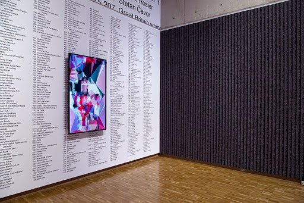
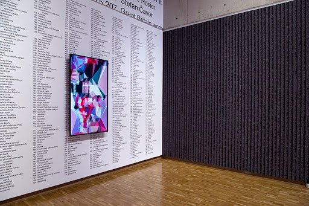

Artistic data visualisations.
Basing the concept of information visualization on scientific roots, (Viégas and Wattenberg ,2007) take the stance that information visualisation is a lens for sense-making when data or information must be represented, especially in digital media. This lens is not clouded by bias, emotions, or prejudices. (Viégas and Wattenberg ,2007) seek to define artistic visualizations as ‘visualizations of data made by artists with the overarching intent of making art.’ This definition pursues to suggest that the intention of making art takes pre-eminence over the intent of communicating the data, where there is a fundamental relationship between the data and the artwork, commonly in form of imagery work.
However, in their work on perception and painting (Healey and Enns ,2002) believe that the effectiveness of visualisations and the aesthetic considerations share visual attention as a common bridge. This view departs from the notion that aesthetics and the functionality in data visualisations exist in different domains.
Borrowing from the two definitions, I pursue to argue that there is an emerging hybrid method of data visualisations that seems to solicit attention from both effectiveness and cosmetics inclined audiences. (Viégas and Wattenberg ,2007) argue that the rise of artist-centric software and productivity tools compounded by the fingertip availability of data enables, empowers, and encourages this hybrid. Furthermore, it is of note that there is a shift in the traditional end-user to being a producer of these visualisations.
Extrapolating from these scholarly works, I argue that this new trend is also encouraged by the rise of entrepreneurship, precarity of work, and cultural work. This new trend is a high-risk pathway of precarious work, where the artist and scientific work seem to find a common ground in the neoliberal era. In her work on new culture industries, McRobbie (2016) argues that such an art could be viewed as a new normal across many cultural industries.

In his famous paintings, Salavon (1960) represents data in an overarchingly artistic manner, while preserving the integrity of the data. This integrity is preserved by a true pixel to pixel averaging based on the values being compared. In one of the painted pieces coined The Master Index, Salavon articulates how the Internet is efficient at tracking human interest (Salavon, 1960). They rule by Salavon seeks to shed insight into how the US ruling class is interconnected into the boards of leading and influential U.S. companies, shedding light on capitalist power structures. The artistical visualised data is presented in a way that helps declutter the information for the audience This implies that artistic data visualisations can help uncover representations of information that might not be easily available to the public, like political narratives. Furthermore, these artistic visualisations tap into the cultural aesthetics preferences, which might vary from community to community. Levin (2000) draws an interesting visualisation in his work on the cultural preferences of integers. Visualisations like these seem to only come alive or at least begin to make sense once there is an existence of a bridge between the functional and the cosmetic domains.
bibliography
Healey, C.G. and Enns, J.T., 2002. Perception and painting: A search for effective, engaging visualizations. IEEE Computer Graphics and Applications, 22(2), pp.10-15.
Levin, G., 2000. Painterly interfaces for audiovisual performance (Doctoral dissertation, Massachusetts Institute of Technology).
McRobbie, A. (2016) Be Creative: Making a Living in the New Culture Industries. Cambridge, UK ; Malden, MA: Polity Press.
Salavon, J., 1960. Jason Salavon. Shoes, Domestic Production, 1998.
Viégas, F. B. and Wattenberg, M. (2007) ‘Artistic Data Visualization: Beyond Visual Analytics’, in Schuler, D. (ed.) Online Communities and Social Computing. Berlin, Heidelberg: Springer Berlin Heidelberg (Lecture Notes in Computer Science), pp. 182–191. doi: 10.1007/978-3-540-73257-0_21.

